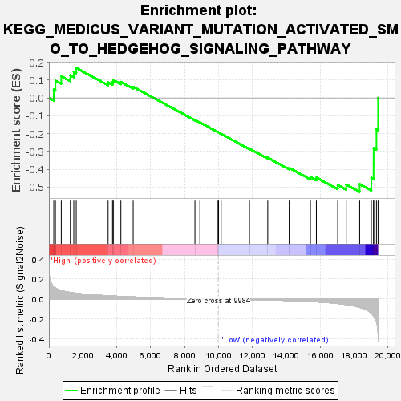
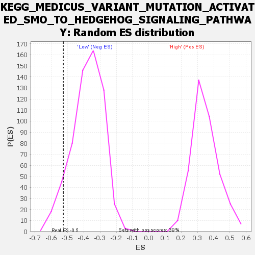

Blue-Pink O' Gram in the Space of the Analyzed GeneSet
| Dataset | WG6v3.CPT1A.cls#High_versus_Low.CPT1A.cls#High_versus_Low_repos |
| Phenotype | CPT1A.cls#High_versus_Low_repos |
| Upregulated in class | Low |
| GeneSet | KEGG_MEDICUS_VARIANT_MUTATION_ACTIVATED_SMO_TO_HEDGEHOG_SIGNALING_PATHWAY |
| Enrichment Score (ES) | -0.5264143 |
| Normalized Enrichment Score (NES) | -1.3962619 |
| Nominal p-value | 0.06885246 |
| FDR q-value | 0.5681183 |
| FWER p-Value | 1.0 |

| SYMBOL | TITLE | RANK IN GENE LIST | RANK METRIC SCORE | RUNNING ES | CORE ENRICHMENT | |
|---|---|---|---|---|---|---|
| 1 | WNT3 | WNT3 | 286 | 0.121 | 0.0465 | No |
| 2 | BMP4 | BMP4 | 383 | 0.109 | 0.0966 | No |
| 3 | WNT16 | WNT16 | 728 | 0.084 | 0.1215 | No |
| 4 | WNT9A | WNT9A | 1265 | 0.065 | 0.1268 | No |
| 5 | WNT5B | WNT5B | 1467 | 0.060 | 0.1467 | No |
| 6 | GLI1 | GLI1 | 1611 | 0.057 | 0.1680 | No |
| 7 | WNT6 | WNT6 | 3491 | 0.031 | 0.0868 | No |
| 8 | SMO | SMO | 3753 | 0.029 | 0.0879 | No |
| 9 | KIF7 | KIF7 | 3801 | 0.028 | 0.0999 | No |
| 10 | SUFU | SUFU | 4244 | 0.025 | 0.0896 | No |
| 11 | WNT9B | WNT9B | 4970 | 0.020 | 0.0621 | No |
| 12 | WNT8B | WNT8B | 8614 | 0.004 | -0.1236 | No |
| 13 | HHIP | HHIP | 8906 | 0.003 | -0.1370 | No |
| 14 | WNT2B | WNT2B | 9976 | 0.000 | -0.1921 | No |
| 15 | WNT8A | WNT8A | 10008 | -0.000 | -0.1937 | No |
| 16 | GLI2 | GLI2 | 10161 | -0.000 | -0.2013 | No |
| 17 | WNT5A | WNT5A | 11831 | -0.006 | -0.2844 | No |
| 18 | WNT10A | WNT10A | 12910 | -0.010 | -0.3351 | No |
| 19 | WNT7B | WNT7B | 14175 | -0.016 | -0.3920 | No |
| 20 | PTCH2 | PTCH2 | 15428 | -0.026 | -0.4433 | No |
| 21 | PTCH1 | PTCH1 | 15778 | -0.029 | -0.4466 | No |
| 22 | WNT4 | WNT4 | 17037 | -0.046 | -0.4883 | Yes |
| 23 | GLI3 | GLI3 | 17539 | -0.056 | -0.4856 | Yes |
| 24 | BMP2 | BMP2 | 18332 | -0.085 | -0.4833 | Yes |
| 25 | WNT10B | WNT10B | 19021 | -0.141 | -0.4471 | Yes |
| 26 | WNT1 | WNT1 | 19154 | -0.170 | -0.3678 | Yes |
| 27 | WNT3A | WNT3A | 19157 | -0.172 | -0.2809 | Yes |
| 28 | WNT7A | WNT7A | 19323 | -0.224 | -0.1759 | Yes |
| 29 | WNT2 | WNT2 | 19419 | -0.358 | 0.0002 | Yes |
